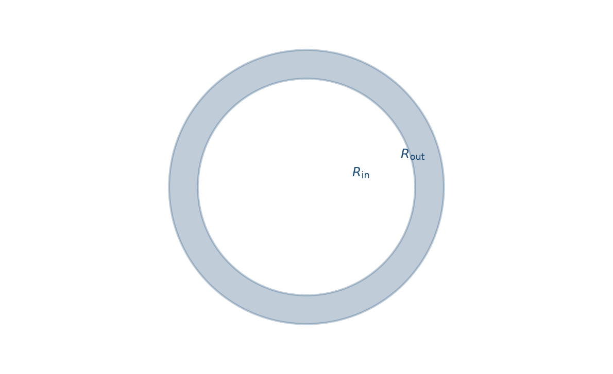
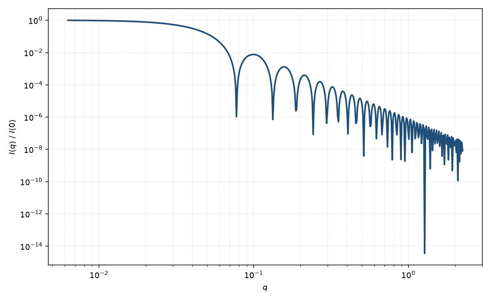

囊泡
vesicle
适用场景
囊泡（单层脂质体、表面活性剂囊泡）是溶剂填充的球形双层：内外半径 $R_{\mathrm{in}},R_{\mathrm{out}}$，膜厚 $t=R_{\mathrm{out}}-R_{\mathrm{in}}$，膜的 SLD 与内外溶剂（常相同）形成壳衬度。适用于稀释的单层囊泡、聚合物囊泡，以及核壳模型中核衬度被溶剂匹配的极限。
与实心核壳的区别：内部是溶剂而非高衬度核，低 $q$ 的有效体积由膜体积而非整个外球体积主导；$I(0)$ 对膜厚与膜衬度敏感。多层洋葱状囊泡应改用多层囊泡或洋葱球。
物理图像
薄球壳的振幅是外球与内球均匀球振幅之差。膜很薄时，$P(q)$ 在中间 $q$ 可接近 $q^{-2}$ 的片状特征，同时仍保留整体尺寸决定的 Guinier 区。极小位置主要敏感外半径，振荡调制敏感膜厚。
若内外溶剂不同（包载溶质、未平衡的氘代），则回到一般核壳三衬度，而不是“空心壳”简化。
示意图


核心公式
内外溶剂 SLD 相同、膜 SLD 为 $\rho_m$ 时，
$$A(q)=(\rho_m-\rho_{\mathrm{solv}})\bigl[V(R_{\mathrm{out}})\Phi(qR_{\mathrm{out}})-V(R_{\mathrm{in}})\Phi(qR_{\mathrm{in}})\bigr],$$ $$I(q)=n|A(q)|^2+B.$$薄壳极限 $t\ll R$ 下，$A(q)\propto 4\pi R^2 t\,\Delta\rho\,j_0(qR)$，其中 $j_0(x)=\sin x/x$。符号与核壳页相同，$\Phi$ 为 Rayleigh 振幅。
参数表
| 参数 | 符号 | 含义 | 单位 | 典型范围 |
|---|---|---|---|---|
| 内半径 | $R_{\mathrm{in}}$ | 溶剂核的半径 | Å 或 nm | 50–2000 Å |
| 外半径 | $R_{\mathrm{out}}$ | 膜外表面半径 | Å 或 nm | 内半径加膜厚 |
| 膜厚 | $t$ | $R_{\mathrm{out}}-R_{\mathrm{in}}$ | Å | 20–50 Å（脂质双层量级） |
| 膜 SLD | $\rho_m$ | 双层平均散射长度密度 | Å$^{-2}$ | 头基/尾链可再分层 |
| 溶剂 SLD | $\rho_{\mathrm{solv}}$ | 囊内囊外溶剂（简化相同） | Å$^{-2}$ | H/D 可调 |
拟合注意
$R$ 与 $t$ 在有限 $q$ 窗上相关；膜厚最好用高 $q$ 或独立的膜面积/组成约束。尺寸多分散强烈抹平囊泡振荡，且大囊泡的第一极小常落在 $q_{\min}$ 之外，此时只能约束 $R_g$ 量级。
取向平均对球囊泡仍平凡。脂质膜通常无磁性衬度；若膜镶嵌磁性颗粒，须单独给出磁 SLD，不能把核通道壳厚直接当成磁厚度。若囊泡扁化或成管，应离开球类。多层重复间距出现衍射样峰时，改多层囊泡，不要用单壳硬撑。
相近模型
参考文献
- Pedersen, J. S. Analysis of small-angle scattering data from colloids and polymer solutions: modeling and least-squares fitting. J. Appl. Cryst. 1997, 30, 339–354. DOI: 10.1107/S0021889897002532